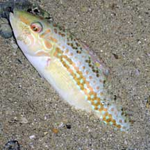
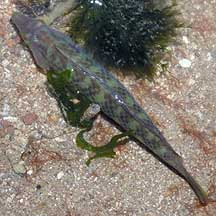
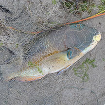

|
|
| fishes text index | photo index |
| Phylum Chordata > Subphylum Vertebrate > fishes |
| Wrasses Family Labridae updated Sep 2020
Where seen? These colourful fishes are sometimes seen on many of our shores. Among the more colourful little fishes to be seen in tide pools at low tide, wrasses are nevertheless often overlooked as they are often well hidden. Many are active during the day, sheltering during the night in hiding places. Small ones may burrow into sand. What are wrasses? Wrasses belong to the Family Labridae. This is the second largest family of fishes after the gobies. According to FishBase: the family has 60 genera and 500 species, found in the Atlantic, Indian and Pacific oceans and coming in a wide range of sizes and colours. Being such a large family, wrasses come in a wide range of sizes and habits. They range from small fish 8cm long to large ones up to 40cm long. The Napolean wrasse (Cheilinus undulatus) can grow to 2m long and weigh up to 180kgs! Features: Many wrasses are brightly coloured, mostly greenish but with patterns of blue, yellow and red. Often young fish are different from the adults, their colours and patterns changing as they develop. As adults, they also change colours during breeding season, the males usually becoming more brightly coloured. Some may also change colours to match their surroundings. This is why wrasses are sometimes difficult to identify. |
 Well camouflaged! Tuas, Apr 08 |
 Often half buried in the sand. Pulau Sekudu, Apr 06 |
 Seen from above. Pulau Sekudu, Apr 06 |
| Wrasse food: Most wrasses are
carnivorous predators and eat small crustaceans, snails and worms.
Most wrasses have thick lips and sharp canine teeth that stick out.
Mostly solitary hunters, they can be aggressive towards others of
their own kind. Some wrasses may also scavange. Some eat plankton,
and a few eat parasites off larger fish (see below). Many are sand
burrowers. An intriguing member of this family is the Cleaner wrasse (Labroides dimidiatus). This little wrasse performs cleaning services for larger fishes and sea creatures, picking parasites and dead skin off them. Marine 'clients' often form a patient queue at a cleaning station manned by the Cleaner wrasse, allowing the little fish to enter their mouth and gills without eating it. Wrasse babies: Wrasses can change their gender! Most wrasses grow to become females first. A female can turn into a fully functional male within a few days. In some species, each male has a harem of females. When the male dies, the largest female changes gender and takes his place. In some species, however, there are two kinds of males. One that is born a male (primary male), and another that was born a female and later turned male. Primary males can produce more sperm than those that change into males; however, primary males usually wear the colours of a female! Mating wrasses rise up to the water surface together, releasing eggs and sperm simultaneously. |
 Caught by a Carpet eel-blenny. Cyrene Reef, Jun 16 Photo shared by Loh Kok Sheng on his blog. |
 Often seen in abandoned nets and traps. Pulau Semakau, Jan 17 |
| Human uses: Being colourful and
lively, wrasses of various kinds are extensively harvested from the
wild for the live aquarium trade. Some large ones are harvested as
food. The Napolean wrasse (Cheilinus undulatus) is a large
fish that is being over-collected as a luxury food item for the Chinese
market. These gentle, intelligent fishes can live for 50 years and
reach up to 180kgs. Unsustainable harvesting of these fishes may doom
them to extinction. Status and threats: None of our wrasses are listed among the threatened animals of Singapore. However, like other creatures of the intertidal zone, they are affected by human activities such as reclamation and pollution. Over-collection can also impact on local populations. Elsewhere, harvesting of wrasses large and small may involve the use of cyanide or blasting, which damage the habitat and kill many other creatures. Like other fish and creatures harvested for the live aquarium trade, most die before they can reach the retailers. Without professional care, most die soon after they are sold. Those that do survive are unlikely to breed. |
| Some Wrasses on Singapore shores |


| Family
Labridae recorded for Singapore from Wee Y.C. and Peter K. L. Ng. 1994. A First Look at Biodiversity in Singapore. *from Lim, Kelvin K. P. & Jeffrey K. Y. Low, 1998. A Guide to the Common Marine Fishes of Singapore. ^from WORMS +Other additions (Singapore Biodiversity Record, etc)
|
Links
References
|